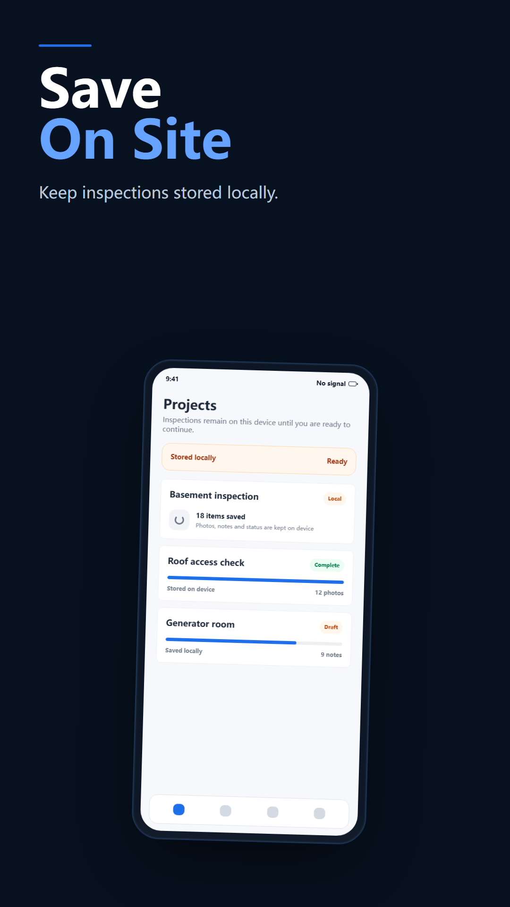

首页/博客 功能指南 照片证据与位置记录：在 SiteReport 中能做什么 为检查项拍照，并关联备注、时间和位置信息。 了解它解决的问题、具体选项、真实操作步骤和已知限制。 发布机构 上海促动科技有限公司 为检查项拍照，并关联备注、时间和位置信息。 没有检查上下文的照片，之后很难作为证据使用。这项功能解决什么问题为检查项拍摄一张或多张照片将照片关联到检查记录在条件允许时记录位置和拍摄时间如何融入处理流程打开检查项拍摄或选择证据照片检查照片并继续巡检导出前需要检查什么照片来源、检查项和可见证据标注注意事项位置详情取决于设备位置服务和权限。